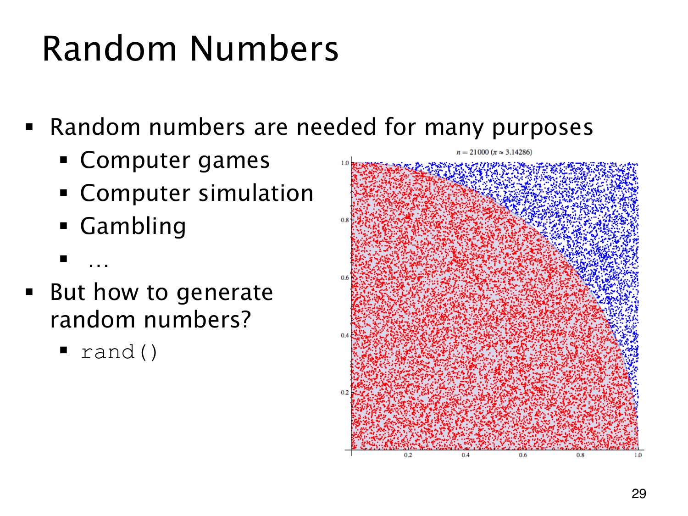

L1.12 · 第 29 页讲解原文
查看这一页课件

随机点也能用来估计圆周率
右图在单位正方形里撒点，红点落在四分之一单位圆内，蓝点落在圆外。若抽到的点近似均匀，圆内点所占比例就近似面积比 π/4，因此
π≈4总点数圆内点数.
图中约 21000 个点给出一次估计。它展示了随机抽样怎样参与数值计算；这不是精确恒等式，点的数量和抽样质量都会影响误差。
电脑游戏、计算机模拟和博彩也都需要随机数。程序调用 rand() 只是用了一个接口，背后仍须有生成这些数字的方法。
确定性程序可以产生看起来随机的序列。它是否适合某项用途，还要检查统计性质以及结果有多容易预测。